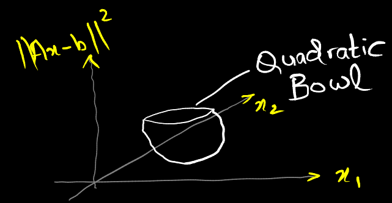
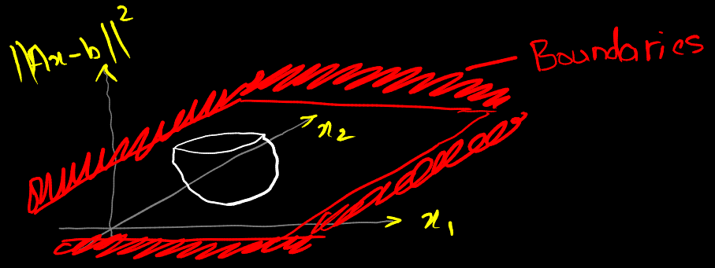

pinv does not need to know $b$ to be used. It is only possible separate out $A$ and $b$ since the solution is linear in $b$. It is kept in the form of the transposes for convenience.

The quadratic form is given by $[x^T A^T Ax - b^T Ax - x^T A^T b + b^2]$ but the shape is given by $A^T A$ in $x^T A^T Ax$.
When $A$ starts having small singular values, the bowl starts elongating just as in the case of the parabola with smaller slopes. It can elongate more or less in some directions/dimensions. As it gets long, the minimum $x$ starts leaving it, i.e. gets bigger.

Quadratic programs cannot be solved with pen and paper unless they're very very small. There are efficient algorithms for solving them that can be run in real time at high speeds.